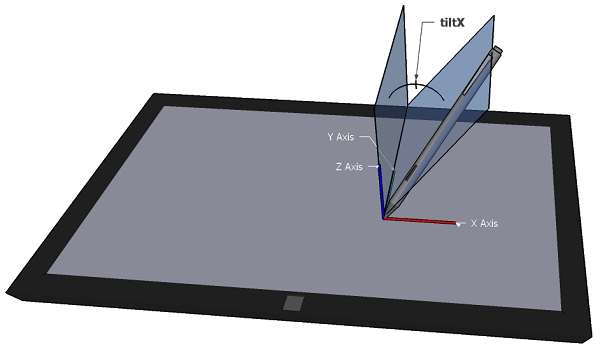
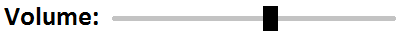

The features in this specification extend or modify those found in Pointer Events, a W3C Recommendation that describes events and related interfaces for handling hardware agnostic pointer input from devices including a mouse, pen, touchscreen, etc. For compatibility with existing mouse based content, this specification also describes a mapping to fire Mouse Events for other pointer device types.
This specification is an update to [[PointerEvents]] which was shipped broadly only by Microsoft Internet Explorer and Microsoft Edge (though a further independent and mostly interoperable implementation was present in a pre-release build of Mozilla Firefox when the Pointer Events specification was published as a W3C Recommendation). Level 2 includes editorial clarifications, new features and minor breaking changes that address certain limitations and concerns that have been raised about aspects of the design, in an effort to enable wider browser adoption.
Introduction
Today, most [[HTML5]] content is used with and/or designed for mouse input. Those that handle input in a custom manner typically code to [[!UIEVENTS]] Mouse Events. Newer computing devices today, however, incorporate other forms of input, including touchscreens, pen input, etc. Event types have been proposed for handling each of these forms of input individually. However, that approach often incurs unnecessary duplication of logic and event handling overhead when adding support for a new input type. This often creates a compatibility problem when content is written with only one device type in mind. Additionally, for compatibility with existing mouse-based content, most user agents fire Mouse Events for all input types. This makes it ambiguous whether a Mouse Event represents an actual mouse device or is being produced from another input type for compatibility, which makes it hard to code to both device types simultaneously.
To reduce the cost of coding to multiple input types and also to help with the above described ambiguity with Mouse Events, this specifications defines a more abstract form of input, called a pointer. A pointer can be any point of contact on the screen made by a mouse cursor, pen, touch (including multi-touch), or other pointing input device. This model makes it easier to write sites and applications that work well no matter what hardware the user has. For scenarios when device-specific handling is desired, this specification also defines properties for inspecting the device type which produced the event. The primary goal is to provide a single set of events and interfaces that allow for easier authoring for cross-device pointer input while still allowing for device-specific handling only when necessary for an augmented experience.
An additional key goal is to enable multi-threaded user agents to handle default touch actions, such as scrolling, without blocking on script execution.
While this specification defines a unified event model for a variety of pointer inputs, this model does not cover other forms of input such as keyboards or keyboard-like interfaces (for instance, a screenreader or similar assistive technology running on a touchscreen-only device, which allows users sequential navigation through focusable controls and elements). While user agents might choose to also generate pointer events in response to these interfaces, this scenario is not covered in this specification.
In the first instance, authors are encouraged to provide equivalent functionality for all forms of input by responding to high-level events such as focus, blur and click. However, when using low-level events (such as Pointer Events), authors are encouraged to ensure that all types of input are supported. In the case of keyboards and keyboard-like interfaces, this might require the addition of explicit keyboard event handling. See WCAG 2.0 Guideline 2.1 for further details.
A pointer is a hardware agnostic representation of input devices that can target a specific coordinate (or set of coordinates) on a screen.
The events for handling generic pointer input look a lot like those for mouse: pointerdown, pointermove, pointerup, pointerover, pointerout, etc. This facilitates easy content migration from Mouse Events to Pointer Events.
Pointer Events provide all the usual properties present in Mouse Events (client coordinates, target element, button states, etc.) in addition to new properties for other forms of input: pressure, contact geometry, tilt, etc. So authors can easily code to Pointer Events to share logic between different input types where it makes sense, and customize for a particular type of input only where necessary to get the best experience.
While Pointer Events are sourced from a variety of input devices, they are not defined as being generated from some other set of device-specific events. While possible and encouraged for compatibility, this spec does not require other device-specific events be supported (e.g. mouse events, touch events, etc.). A user agent could support pointer events without supporting any other device events. For compatibility with content written to mouse-specific events, this specification does provide an optional section describing how to generate compatibility mouse events based on pointer input from devices other than a mouse.
This specification does not provide any advice on the expected behavior of user agents that support both Touch Events (as defined in [[TOUCH-EVENTS]]) and Pointer Events. For more information on the relationship between these two specifications, see the Touch Events Community Group.
Examples
The following are example author code that demonstrates how the APIs in this specification might be used.
/* Bind to either Pointer Events or traditional touch/mouse */
if (window.PointerEvent) {
// if Pointer Events are supported, only listen to pointer events
target.addEventListener("pointerdown", function(e) {
// if necessary, apply separate logic based on e.pointerType
// for different touch/pen/mouse behavior
...
});
...
} else {
// traditional touch/mouse event handlers
target.addEventListener('touchstart', function(e) {
// prevent compatibility mouse events and click
e.preventDefault();
...
});
...
target.addEventListener('mousedown', ...);
...
}
// additional event listeners for keyboard handling
...
window.addEventListener("pointerdown", detectInputType);
function detectInputType(event) {
switch(event.pointerType) {
case "mouse":
/* mouse input detected */
break;
case "pen":
/* pen/stylus input detected */
break;
case "touch":
/* touch input detected */
break;
default:
/* pointerType is empty (could not be detected)
or UA-specific custom type */
}
}
<style>
/* Disable intrinsic user agent touch behaviors (such as panning or zooming) so
that all events on the canvas element are given to the application instead. */
canvas { touch-action: none; }
</style>
<canvas id="drawSurface" width="500px" height="500px" style="border:1px solid black;"></canvas>
<script>
var canvas = document.getElementById("drawSurface"),
context = canvas.getContext("2d");
if (window.PointerEvent) {
canvas.addEventListener("pointermove", paint);
if(window.navigator.maxTouchPoints>1)
// user agent and hardware support multi-touch
...
} else {
// provide fallback for user agents that do not support Pointer Events
canvas.addEventListener("mousemove", paint);
}
function paint(event) {
if(event.buttons>0)
context.fillRect(event.clientX, event.clientY, 5, 5);
}
// additional event listeners/functions for keyboard handling
...
</script>
The condition when a pointer has a non-zero value for the buttons property. For mouse, this is when the device has at least one button depressed. For touch, this is when there is physical contact with the digitizer. For pen, this is when either the pen has physical contact with the digitizer, or at least one button is depressed while hovering.
active pointer
Any touch contact, pen stylus, mouse cursor, or other pointer that can produce events. If it is possible for a given pointer (identified by a unique pointerId) to produce additional events within the document, then that pointer is still considered active. Examples:
A mouse connected to the device is always active.
A touch contact on the screen is considered active.
If a touch contact or pen stylus is lifted beyond the range of the digitizer, then it is no longer considered active.
On some platforms, the set of active pointers includes all pointer input to the device, including any that are not targeted at the user agent (e.g. those targeted at other applications).
An event whose default action was prevented by means of preventDefault(), returning false in an event handler, or other means as defined by [[!UIEVENTS]] and [[!HTML5]].
contact geometry
The bounding box of an input (most commonly, touch) on a digitizer. This typically refers to devices with coarser pointer input resolution than a single pixel. Some devices do not report this data at all.
digitizer
A type of input sensing device in which a surface can detect input which is in contact and/or in close proximity. Most commonly, this is the surface that senses input from the touch contact or a pen stylus.
hit test
The process by which a user agent determines a target element for a pointer event. Typically, this is determined by considering the pointer's location and also the visual layout of elements in a document on screen media.
pointer
A hardware agnostic representation of input devices that can target a specific coordinate (or set of coordinates) on a screen, such as a mouse, pen, or touch contact.
user agent
A program, such as a browser or content authoring tool, normally running on a client machine, which acts on a user's behalf in retrieving, interpreting, executing, presenting, or creating content.
queue a task
Adding the task to events task queue of the relevant event loop, as defined in [[!HTML5]].
A unique identifier for the pointer causing the event. This identifier MUST be unique from all other active pointers in the top-level browsing context (as defined by [[!HTML5]]) at the time. A user agent MAY recycle previously retired values for pointerId from previous active pointers, if necessary.
The pointerId selection algorithm is implementation specific. Therefore authors cannot assume values convey any particular meaning other than an identifier for the pointer that is unique from all other active pointers. As an example, values are not guaranteed to be monotonically increasing.
width
The width (magnitude on the X axis), in CSS pixels (see [[CSS21]]), of the contact geometry of the pointer. This value MAY be updated on each event for a given pointer. For inputs that typically lack contact geometry (such as a traditional mouse), and in cases where the actual geometry of the input is not detected by the hardware, the user agent MUST return a default value of 1.
height
The height (magnitude on the Y axis), in CSS pixels (see [[CSS21]]), of the contact geometry of the pointer. This value MAY be updated on each event for a given pointer. For inputs that typically lack contact geometry (such as a traditional mouse), and in cases where the actual geometry of the input is not detected by the hardware, the user agent MUST return a default value of 1.
pressure
The normalized pressure of the pointer input in the range of [0,1], where 0 and 1 represent the minimum and maximum pressure the hardware is capable of detecting, respectively. For hardware that does not support pressure, the value MUST be 0.5 when in the active buttons state and 0 otherwise. Note: all pointerup events will have pressure 0.
tangentialPressure
The normalized tangential pressure (also known as barrel pressure), typically set by an additional control (e.g. a finger wheel on an airbrush stylus), of the pointer input in the range of [-1,1], where 0 is the neutral position of the control. Note that some hardware may only support positive values in the range of [0,1]. For hardware that does not support tangential pressure, the value MUST be 0.
tiltX
The plane angle (in degrees, in the range of [-90,90]) between the Y-Z plane and the plane containing both the transducer (e.g. pen stylus) axis and the Y axis. A positive tiltX is to the right. tiltX can be used along with tiltY to represent the tilt away from the normal of a transducer with the digitizer. For devices that do not report tilt, the value MUST be 0.

Positive tiltX.
tiltY
The plane angle (in degrees, in the range of [-90,90]) between the X-Z plane and the plane containing both the transducer (e.g. pen stylus) axis and the X axis. A positive tiltY is towards the user. tiltY can be used along with tiltX to represent the tilt away from the normal of a transducer with the digitizer. For devices that do not report tilt, the value MUST be 0.
Negative tiltY.
twist
The clockwise rotation (in degrees, in the range of [0,359]) of a transducer (e.g. pen stylus) around its own major axis. For devices that do not report twist, the value MUST be 0.
pointerType
Indicates the device type that caused the event (mouse, pen, touch, etc.). If a user agent is to fire a pointer event for a mouse, pen stylus, or touch input device, then the value of pointerType MUST be according to the following table:
Pointer Device Type
pointerType Value
Mouse
mouse
Pen Stylus
pen
Touch Contact
touch
If the device type cannot be detected by the user agent, then the value MUST be an empty string. If a user agent supports pointer device types other than those listed above, the value of pointerType SHOULD be vendor prefixed to avoid conflicting names for different types of devices. Future specifications MAY provide additional normative values for other device types.
See Example 2 for a basic demonstration of how the pointerType can be used. Also note that developers should include some form of default handling to cover user agents that may have implemented their own custom pointerType values and for situations where pointerType is simply an empty string.
isPrimary
Indicates if the pointer represents the primary pointer of this pointer type.
The PointerEventInit dictionary is used by the PointerEvent interface's constructor to provide a mechanism by which to construct untrusted (synthetic) pointer events. It inherits from the MouseEventInit dictionary defined in [[!UIEVENTS]]. The steps for constructing an event are defined in [[!DOM4]]. See the examples for sample code demonstrating how to fire an untrusted pointer event.
The PointerEvent interface inherits from MouseEvent, defined in [[UIEVENTS]] and extended by [[CSSOM-VIEW]].
Button States
Chorded Button Interactions
Some pointer devices, such as mouse or pen, support multiple buttons. In the [[!UIEVENTS]] Mouse Event model, each button press produces a mousedown and mouseup event. To better abstract this hardware difference and simplify cross-device input authoring, Pointer Events do not fire overlapping pointerdown and pointerup events for chorded button presses (depressing an additional button while another button on the pointer device is already depressed).
Instead, chorded button presses can be detected by inspecting changes to the button and buttons properties. The button and buttons properties are inherited from the [[!UIEVENTS]] MouseEvent interface, but with a change in semantics and values, as outlined in the following sections.
The modifications to the button and buttons properties apply only to pointer events. For any compatibility mouse events the value of button and buttons should follow [[!UIEVENTS]].
The button property
To identify button state transitions in any pointer event (and not just pointerdown and pointerup), the button property indicates the device button whose state-change fired the event.
Device Button Changes
button
Neither buttons nor touch/pen contact changed since last event
-1
Left Mouse, Touch Contact, Pen contact
0
Middle Mouse
1
Right Mouse, Pen barrel button
2
X1 (back) Mouse
3
X2 (forward) Mouse
4
Pen eraser button
5
During a mouse drag, the value of the button property in a pointermove event will be different from that in a mousemove event. For example, while moving the mouse with the right button pressed, the pointermove events will have the button value -1, but the mousemove events will have the button value 2.
The buttons property
The buttons property gives the current state of the device buttons as a bitmask (same as in MouseEvent, but with an expanded set of possible values).
Current state of device buttons
buttons
Mouse moved with no buttons pressed, Pen moved while hovering with no buttons pressed
0
Left Mouse, Touch Contact, Pen contact
1
Middle Mouse
4
Right Mouse, Pen barrel button
2
X1 (back) Mouse
8
X2 (forward) Mouse
16
Pen eraser button
32
The Primary Pointer
In a multi-pointer (e.g. multi-touch) scenario, the isPrimary property is used to identify a master pointer amongst the set of active pointers for each pointer type.
At any given time, there can only ever be at most one primary pointer for each pointer type.
The first pointer to become active for a particular pointer type (e.g. the first finger to touch the screen in a multi-touch interaction) becomes the primary pointer for that pointer type.
Authors who desire single-pointer interaction can achieve this by ignoring non-primary pointers (however, see the note below on multiple primary pointers).
When two or more pointer device types are being used concurrently, multiple pointers (one for each pointerType) are considered primary. For example, a touch contact and a mouse cursor moved simultaneously will produce pointers that are both considered primary.
Some devices, operating systems and user agents may ignore the concurrent use of more than one type of pointer input to avoid accidental interactions. For instance, devices that support both touch and pen interactions may ignore touch inputs while the pen is actively being used, to allow users to rest their hand on the touchscreen while using the pen (a feature commonly referred to as "palm rejection"). Currently, it is not possible for authors to suppress this behavior.
In some cases, it is possible for the user agent to fire pointer events in which no pointer is marked as a primary pointer. For instance, when there are multiple active pointers of a particular type like multi-touch and the primary pointer is removed (e.g. it leaves the screen), there will be no primary pointer events. Also on the platforms where the primary pointer is determined using all active pointers on the device (including those targeted at an application other than the user agent), if the first touch interaction is targeted outside the user agent and a secondary (multi-touch) touch interaction is targeted inside the user agent, then the user agent may fire pointer events for the second contact with a value of false for isPrimary.
Current operating systems and user agents don't usually have a concept of multiple mouse inputs. When more than one mouse device is present (for instance, on a laptop with both a trackpad and an external mouse), all mouse devices are generally treated as a single device - movements on any of the devices are translated to movement of a single mouse pointer, and there is no distinction between button presses on different mouse devices. For this reason, there will usually only be a single mouse pointer, and that pointer will be primary.
Otherwise, set the target to the object returned by normal hit test mechanisms (out of scope for this specification).
If this is a pointerdown event, the associated device is a direct manipulation device and the target is an Element, then set pointer capture for this pointerId to the target element as described in implicit pointer capture.
Fire the event to the determined target.
Using the pointer capture target override as the target instead of the normal hit-test result may fire some boundary events. This is the same as the pointer leaving its previous target and entering this new capturing target and if they are different targets boundary events should be dispatched first. When the capture is released the same scenario may happen as the pointer is leaving the capturing target and entering the hit-test target.
Attributes and Default Actions
The bubbles and cancelable properties and the default actions for the event types defined in this specification appear in the following table. Details of each of these event types are provided in Pointer Event types.
Event Type
Bubbles
Cancelable
Default Action
pointerover
Yes
Yes
None
pointerenter
No
No
None
pointerdown
Yes
Yes
Varies: when the pointer is primary, all default actions of the mousedown event
Canceling this event also sets the PREVENT MOUSE EVENT flag for this pointerType, which prevents subsequent firing of certain compatibility mouse events.
pointermove
Yes
Yes
Varies: when the pointer is primary, all default actions of mousemove
pointerup
Yes
Yes
Varies: when the pointer is primary, all default actions of mouseup
pointercancel
Yes
No
None
pointerout
Yes
Yes
None
pointerleave
No
No
None
gotpointercapture
Yes
No
None
lostpointercapture
Yes
No
None
For all pointer events in the table above, composed ([[!DOM4]]) attribute SHOULD be true and detail [[!UIEVENTS]] attribute SHOULD be 0.
Many user agents expose non-standard attributes fromElement and toElement in MouseEvents to support legacy content. In those user agents, the values of those (inherited) attributes in PointerEvents must be null to encourage the use of the standardized alternates (i.e. target and relatedTarget).
Similar to the MouseEvents [[!UIEVENTS]] the relatedTarget should be initialized to the element whose bounds the pointer just left (in the case of a pointerover or pointerenter event) or the element whose bounds the pointer is entering (in the case of a pointerout or pointerleave). For other pointer events, this value will default to null. Note that when an element receives the pointer capture all the following events for that pointer are considered to be inside the boundary of the capturing element.
For gotpointercapture and lostpointercapture all the attributes except the ones defined in the table above should be the same as the Pointer Event that caused the user agent to run Process Pending Pointer Capture and fire the gotpointercapture and lostpointercapture events.
Process Pending Pointer Capture
The user agent MUST run the following steps when implicitly releasing pointer capture as well as when firing Pointer Events that are not gotpointercapture or lostpointercapture.
A user agent MUST fire a pointer event named pointerover when a pointing device is moved into the hit test boundaries of an element. Note that setPointerCapture or releasePointerCapture might have changed the hit test target and while a pointer is captured it is considered to be always inside the boundaries of the capturing element for the purpose of firing boundary events. A user agent MUST also fire this event prior to firing a pointerdown event for devices that do not support hover (see pointerdown).
The pointerenter event
A user agent MUST fire a pointer event named pointerenter when a pointing device is moved into the hit test boundaries of an element or one of its descendants, including as a result of a pointerdown event from a device that does not support hover (see pointerdown). Note that setPointerCapture or releasePointerCapture might have changed the hit test target and while a pointer is captured it is considered to be always inside the boundaries of the capturing element for the purpose of firing boundary events. This event type is similar to pointerover, but differs in that it does not bubble.
There are similarities between this event type, the mouseenter event described in [[UIEVENTS]], and the CSS :hover pseudo-class described in [[CSS21]]. See also the pointerleave event.
The pointerdown event
A user agent MUST fire a pointer event named pointerdown when a pointer enters the active buttons state. For mouse, this is when the device transitions from no buttons depressed to at least one button depressed. For touch, this is when physical contact is made with the digitizer. For pen, this is when the pen either makes physical contact with the digitizer without any button depressed, or transitions from no buttons depressed to at least one button depressed while hovering.
For mouse (or other multi-button pointer devices), this means pointerdown and pointerup are not fired for all of the same circumstances as mousedown and mouseup. See chorded buttons for more information.
Authors can prevent the firing of certain compatibility mouse events by canceling the pointerdown event (if the isPrimary property is true). This sets the PREVENT MOUSE EVENT FLAG on the pointer. Note, however, that this does not prevent the mouseover, mouseenter, mouseout, or mouseleave events from firing.
The pointermove event
A user agent MUST fire a pointer event named pointermove when a pointer changes coordinates. Additionally, when a pointer changes button state, pressure, tangential pressure, tilt, twist, or contact geometry (e.g. width and height) and the circumstances produce no other pointer events defined in this specification then a user agent MUST fire a pointer event named pointermove.
The pointerup event
A user agent MUST fire a pointer event named pointerup when a pointer leaves the active buttons state. For mouse, this is when the device transitions from at least one button depressed to no buttons depressed. For touch, this is when physical contact is removed from the digitizer. For pen, this is when the pen is removed from the physical contact with the digitizer while no button is depressed, or transitions from at least one button depressed to no buttons depressed while hovering.
For mouse (or other multi-button pointer devices), this means pointerdown and pointerup are not fired for all of the same circumstances as mousedown and mouseup. See chorded buttons for more information.
The pointercancel event
A user agent MUST fire a pointer event named pointercancel in the following circumstances:
The user agent has determined that a pointer is unlikely to continue to produce events (for example, because of a hardware event).
After having fired the pointerdown event, if the pointer is subsequently used to manipulate the page viewport (e.g. panning or zooming).
User agents can trigger panning or zooming through multiple pointer types (such as touch and pen),
and therefore the start of a pan or zoom action may result in the cancellation of various pointers, including pointers with different pointer types.
Immediately before drag operation starts [[!HTML]],
for the pointer that caused the drag operation.
If the start of the drag operation is prevented through any means
(e.g. through calling preventDefault on the dragstart event)
there will be no pointercancel event.
After firing the pointercancel event, a user agent MUST also fire a pointer event named pointerout followed by firing a pointer event named pointerleave.
This section is non-normative.
Examples of scenarios in which a user agent might determine that a pointer is unlikely to continue to produce events include:
A device's screen orientation is changed while a pointer is active.
The user inputs a greater number of simultaneous pointers than is supported by the device.
The user agent interprets the input as accidental (for example, the hardware supports palm rejection).
The user agent interprets the input as a pan or zoom gesture.
Methods for changing the device's screen orientation, recognizing accidental input, or using a pointer to manipulate the viewport (e.g. panning or zooming) are out of scope for this specification.
The pointerout event
A user agent MUST fire a pointer event named pointerout when any of the following occurs:
A pointing device is moved out of the hit test boundaries of an element. Note that setPointerCapture or releasePointerCapture might have changed the hit test target and while a pointer is captured it is considered to be always inside the boundaries of the capturing element for the purpose of firing boundary events.
After firing the pointercancel event (see pointercancel).
When a pen stylus leaves the hover range detectable by the digitizer.
The pointerleave event
A user agent MUST fire a pointer event named pointerleave when a pointing device is moved out of the hit test boundaries of an element and all of its descendants, including as a result of a pointerup and pointercancel events from a device that does not support hover (see pointerup and pointercancel). Note that setPointerCapture or releasePointerCapture might have changed the hit test target and while a pointer is captured it is considered to be always inside the boundaries of the capturing element for the purpose of firing boundary events. User agents MUST also fire a pointer event named pointerleave when a pen stylus leaves hover range detectable by the digitizer. This event type is similar to pointerout, but differs in that it does not bubble and that it MUST not be fired until the pointing device has left the boundaries of the element and the boundaries of all of its descendants.
There are similarities between this event type, the mouseleave event described in [[UIEVENTS]], and the CSS :hover pseudo-class described in [[CSS21]]. See also the pointerenter event.
The gotpointercapture event
A user agent MUST fire a pointer event named gotpointercapture when an element receives pointer capture. This event is fired at the element that is receiving pointer capture. Subsequent events for that pointer will be fired at this element. See the Setting Pointer Capture and Process Pending Pointer Capture sections.
The lostpointercapture event
A user agent MUST fire a pointer event named lostpointercapture after pointer capture is released for a pointer. This event MUST be fired prior to any subsequent events for the pointer after capture was released. This event is fired at the element from which pointer capture was removed. Subsequent events for the pointer follow normal hit testing mechanisms (out of scope for this specification) for determining the event target. See the Releasing Pointer Capture, Implicit Release of Pointer Capture, and Process Pending Pointer Capture sections.
Extensions to the Element interface
The following section describes extensions to the existing Element interface, defined in [[!HTML5]], to facilitate the setting and releasing of pointer capture.
Setspointer capture for the pointer identified by the argument pointerId to the element on which this method is invoked. For subsequent events of the pointer, the capturing target will substitute the normal hit testing result as if the pointer is always over the capturing target, and they MUST always be targeted at this element until capture is released. The pointer MUST be in its active buttons state for this method to be effective, otherwise it fails silently. Throws a DOMException with the name InvalidPointerId when the provided method's argument does not match any of the active pointers.
releasePointerCapture
Releasespointer capture for the pointer identified by the argument pointerId from the element on which this method is invoked. Subsequent events for the pointer follow normal hit testing mechanisms (out of scope for this specification) for determining the event target. Throws a DOMException with the name InvalidPointerId when the provided the method's argument does not match any of the active pointers.
hasPointerCapture
Indicates whether the element on which this method is invoked has pointer capture for the pointer identified by the argument pointerId. In particular, returns true if the pending pointer capture target override for pointerId is set to the element on which this method is invoked, and false otherwise.
The following section describes extensions to the existing GlobalEventHandlers interface, defined in [[!HTML5]], to facilitate the event handler registration.
The event handler IDL attribute (see [[!HTML5]]) for the gotpointercapture event type.
onlostpointercapture
The event handler IDL attribute (see [[!HTML5]]) for the lostpointercapture event type.
onpointerdown
The event handler IDL attribute (see [[!HTML5]]) for the pointerdown event type.
onpointermove
The event handler IDL attribute (see [[!HTML5]]) for the pointermove event type.
onpointerup
The event handler IDL attribute (see [[!HTML5]]) for the pointerup event type.
onpointercancel
The event handler IDL attribute (see [[!HTML5]]) for the pointercancel event type.
onpointerover
The event handler IDL attribute (see [[!HTML5]]) for the pointerover event type.
onpointerout
The event handler IDL attribute (see [[!HTML5]]) for the pointerout event type.
onpointerenter
The event handler IDL attribute (see [[!HTML5]]) for the pointerenter event type.
onpointerleave
The event handler IDL attribute (see [[!HTML5]]) for the pointerleave event type.
Extensions to the Navigator interface
The Navigator interface is defined in [[!HTML5]]. This specification extends the Navigator interface to provide device detection support.
partial interface Navigator {
readonly attribute long maxTouchPoints;
};
maxTouchPoints
The maximum number of simultaneous touch contacts supported by the device. In the case of devices with multiple digitizers (e.g. multiple touchscreens), the value MUST be the maximum of the set of maximum supported contacts by each individual digitizer.
For example, suppose a device has 3 touchscreens, which support 2, 5, and 10 simultaneous touch contacts, respectively. The value of maxTouchPoints should be 10.
While a maxTouchPoints value of greater than 0 indicates the user's device is capable of supporting touch input, it does not necessarily mean the user will use touch input. Authors should be careful to also consider other input modalities that could be present on the system, such as mouse, pen, screen readers, etc.
maxTouchPoints is often used to ensure that the interaction model of the content can be recognized by the current hardware. UI affordances can be provided to users with less capable hardware. On platforms where the precise number of touch points is not known, the minimum number guaranteed to be recognized is provided. Therefore, it is possible for the number of recognized touch points to exceed the value of maxTouchPoints.
Declaring candidate regions for default touch behaviors
For touch input, the default action of any and all pointer events MUST NOT be a manipulation of the viewport (e.g. panning or zooming).
Touch manipulations are intentionally not a default action of pointer events. Removing this dependency on the cancellation of events facilitates performance optimizations by the user agent.
While the issue of pointers used to manipulate the viewport is generally limited to touch input (where a user's finger can both interact with content and pan/zoom the page), certain user agents may also allow the same types of (direct or indirect) manipulation for other pointer types. For instance, on mobile/tablet devices, users may also be able to pan using a stylus. This section applies to these scenarios as well (despite the specification's use of "touch").
The touch-action CSS property
Name:
touch-action
Value:
auto | none | [ pan-x || pan-y ] | manipulation
Initial:
auto
Applies to:
all elements except: non-replaced inline elements, table rows, row groups, table columns, and column groups.
Inherited:
no
Percentages:
N/A
Media:
visual
Computed value:
Same as specified value.
The touch-action CSS property determines whether touch input MAY trigger default behavior supplied by user agent. This includes, but is not limited to, behaviors such as panning or zooming. See the section on touch-action values.
As noted previously, in the case of user agents that allow default behaviors (such as panning or zooming) for other pointer types, these user agents MUST apply the same consideration for those pointer types. For instance, if a user agent allows panning/zooming with a stylus, the user agent must take into account the relevant touch-action value when determining which default behaviors it should handle.
During the execution of a user agent touch behavior, the user agent MUST NOT fire subsequent pointer events for the pointer. The user agent MUST fire a pointer event named pointercancel (and subsequently a pointerout event and one or more pointerleave events) whenever all of the following are true, in order to end the stream of events for the pointer:
The user agent has determined (via methods out of scope for this specification) that touch input is to be consumed for a touch behavior,
a pointerdown event has been sent for the pointer, and
a pointerup or pointercancel event (following the above mentioned pointerdown) has not yet been sent for the pointer.
User agents may implement complex gestures for default behaviors that involve a series of separate discrete gestures, but which are all treated as part of a single continuous gesture. For example, consider a "fling to scroll" gesture on a touchscreen: a user starts panning the document with a rapid finger movement, lifts the finger from the touchscreen, and the document continues scrolling with simulated inertia. While the document is still moving, the user may place their finger on the touchscreen and execute another "fling" to provide further momentum for the scrolling, or counteract the current scrolling to slow it down, stop scrolling altogether, or reverse the direction of the scrolling. As this specification does not normatively define how gestures and default behaviors are implemented, it is left up to the user agent to decide whether or not the second touch (before it is interpreted as a second "fling" or counteraction of the current scrolling) should fire pointer events or not.
Determining supported touch behavior
When a user touches an element, the effect of that touch is determined by the value of the touch-action property, and the default touch behaviors of the element and its ancestors, as follows:
A touch behavior conforms to an element's touch-action if the behavior is allowed in the coordinate space of the element. Note that if CSS transforms have been applied, the element's coordinate space may differ from the screen coordinate in a way to affect the conformity here; for example, the X axis of an element rotated by 90 degrees with respect to the screen will be parallel to the Y-axis of the screen coodinate.
A touch behavior is supported if it conforms to the touch-action property of each element between the hit tested element and its nearest ancestor with the default touch behavior (including both the hit tested element and the element with the default touch behavior).
Once a touch action has been started, and the user agent has already determined whether or not the action should be handled as a user agent touch behavior, any changes to the relevant touch-action value will be ignored for the duration of the touch action. For instance, programmatically changing the touch-action value for an element from auto to none as part of a pointerdown handler script will not result in the user agent aborting or suppressing any default touch behavior for that touch for as long as that pointer is active.
Some user agents support touch actions triggered by interactions of multiple concurrent pointers (e.g. multi-touch). Methods for processing or associating the touch-action values of multiple concurrent pointers is out of scope for this specification.
Details of touch-action values
auto
The user agent MAY determine any permitted touch behaviors, such as panning and zooming of the viewport, for touches that begin on the element.
none
Touches that begin on the element MUST NOT trigger default touch behaviors.
pan-x pan-y
The user agent MAY consider touches that begin on the element only for the purposes of scrolling that starts in any of the directions specified by all of the listed values. Once scrolling is started, the direction may be reversed by the user even if scrolls that start in the reversed direction are disallowed. In contrast, when scrolling is restricted to starting along a single axis (eg. pan-y), the axis cannot be changed during the scroll.
manipulation
The user agent MAY consider touches that begin on the element only for the purposes of scrolling and continuous zooming. Any additional behaviors supported by auto are out of scope for this specification.
Additional touch-action values common in implementations are defined in [[!COMPAT]].
The terms "pan" and "scroll" are considered synonymous. Defining an interaction or gesture for triggering panning or scrolling, or for triggering behavior for the auto or none values are out of scope for this specification.
The touch-action property only applies to elements that support both the CSS width and height properties (see [[CSS21]]). This restriction is designed to facilitate user agent optimizations for low-latency touch actions. For elements not supported by default, such as <span> which is a non-replaced inline element (see [[HTML5]]), authors can set the display CSS property to a value, such as block, that supports width and height. Future specifications could extend this API to all elements.
Disabling some default touch behaviors may allow user agents to respond to other behaviors more quickly. For example, with auto user agents typically add 300ms of delay before click to allow for double-tap gestures to be handled. In these cases, explicitly setting touch-action: none or touch-action: manipulation will remove this delay. Note that the methods for determining a tap or double-tap gesture are out of scope for this specification.
<div style="touch-action: none;">
This element receives pointer events for all touches.
</div>
<div style="touch-action: pan-x;">
This element receives pointer events when not panning in the horizontal direction.
</div>
<div style="overflow: auto;">
<div style="touch-action: none;">
This element receives pointer events for all touches.
</div>
<div>
Touches on this element MAY be consumed for manipulating the parent.
</div>
</div>
<div style="overflow: auto;">
<div style="touch-action: pan-y;">
<div style="touch-action: pan-x;">
This element receives pointer events for all touches because
it allows only horizontal panning yet an intermediate ancestor
(between it and the pannable element) only allows vertical panning.
Therefore, no touch behaviors are allowed.
</div>
</div>
</div>
Pointer Capture
Pointer capture allows the events for a particular pointer (including any compatibility mouse events) to be retargeted to a particular element other than the normal hit test result of the pointer's location. This is useful in scenarios like a custom slider control (e.g. similar to the [[HTML5]] <input type="range"> control). Pointer capture can be set on the slider thumb element, allowing the user to slide the control back and forth even if the pointer slides off of the thumb.

Example of a custom slider control that chooses a value by sliding the thumb element back and forth. After pointerdown on the thumb, pointer capture can be used to allow the user to slide the thumb even if the pointer drifts off of it.
Setting Pointer Capture
Pointer capture is set on an element by calling the element.setPointerCapture(pointerId) method. When this method is invoked, a user agent MUST run the following steps:
If the pointerId provided as the method's argument does not match any of the active pointers, then throw a DOMException with the name InvalidPointerId.
If the Element on which this method is invoked is not connected ([[!DOM4]]), throw an exception with the name InvalidStateError.
If this method is invoked while the document has a locked element ([[!PointerLock]]), throw an exception with the name InvalidStateError.
For the specified pointerId, set the pending pointer capture target override to the Element on which this method was invoked.
Releasing Pointer Capture
Pointer capture is released on an element explicitly by calling the element.releasePointerCapture(pointerId) method. When this method is called, a user agent MUST run the following steps:
If the pointerId provided as the method's argument does not match any of the active pointers and these steps are not being invoked as a result of the implicit release of pointer capture, then throw a DOMException with the name InvalidPointerId.
If hasPointerCapture is false for the Element with the specified pointerId, then terminate these steps.
Some input devices (such as touchscreens) implement a "direct manipulation" metaphor where a pointer is intended to act primarily on the UI element it became active upon (providing a physical illusion of direct contact, instead of indirect contact via a cursor that conceptually floats above the UI). Such devices are identified by the InputDeviceCapabilities.pointerMovementScrolls property and should have "implicit pointer capture" behavior as follows.
Direct manipulation devices should behave exactly as if setPointerCapture was called on the target element just before the invocation of any pointerdown listeners. The hasPointerCapture API may be used (eg. within any pointerdown listener) to determine whether this has occurred. If releasePointerCapture is not called for the pointer before the next pointer event is fired, then a gotpointercapture event will be dispatched to the target (as normal) indicating that capture is active.
This is a breaking change from [[PointerEvents]], but does not impact the vast majority of existing content. In addition to matching typical platform UX conventions, this design for implicit capture enables user agents to make a performance optimization which prevents the need to invoke hit-testing on touch movement events without explicit developer opt-in (consistent with the performance properties of existing dominant native and web APIs for touch input).
In addition, user agents may implement implicit pointer capture behavior for all input devices on specific UI widgets such as input range controls (allowing some finger movement to stray outside of the form control itself during the interaction).
Implicit Release of Pointer Capture
Immediately after firing the pointerup or pointercancel events, a user agent MUST clear the pending pointer capture target override for the pointerId of the pointerup or pointercancel event that was just dispatched, and then run Process Pending Pointer Capture steps to fire lostpointercapture if necessary.
If the user agent supports firing the click event (see compatibility mouse events) and if in an implicit release scenario both click and lostpointercapture events are fired, click should be fired before lostpointercapture.
When a pointer lock ([[!PointerLock]]) is successfully applied on an element, a user agent MUST run the steps as if the releasePointerCapture() method has been called if any element is set to be captured or pending to be captured.
Compatibility Mapping with Mouse Events
The vast majority of web content existing today codes only to Mouse Events. The following describes an algorithm for how a user agent MAY map generic pointer input to mouse events for compatibility with this content.
The compatibility mapping with mouse events are an OPTIONAL feature of this specification. User agents are encouraged to support the feature for best compatibility with existing legacy content. User agents that do not support compatibility mouse events are still encouraged to support the click and contextmenu events (see the note below).
The click event, defined in [[UIEVENTS]], and the contextmenu event, defined in [[HTML5]], are not considered compatibility mouse events as they are typically tied to user interface activation and are fired from other input devices, like keyboards.
In user agents that support firing click and/or contextmenu, calling preventDefault during a pointer event typically does not have an effect on whether click and/or contextmenu are fired or not. Because they are not compatibility mouse events, user agents typically fire click and contextmenu for all pointing devices, including pointers that are not primary pointers.
The relative ordering of these high-level events (click, contextmenu, focus, blur, etc.) with pointer events is undefined and varies between user agents. For example, in some user agents contextmenu will often follow a pointerup, in others it'll often precede a pointerup or pointercancel, and in some situations it may be fired without any corresponding pointer event (such as a keyboard shortcut).
Unless otherwise noted, the target of any mapped mouse event SHOULD be the same target as the respective pointer event unless the target is no longer participating in its ownerDocument's tree. In this case, the mouse event should be fired at the original target's nearest ancestor node (at the time it was removed from the tree) that still participates in its ownerDocument's tree, meaning that a new event path (based on the new target node) is built for the mouse event.
Authors can prevent the production of certain compatibility mouse events by canceling the pointerdown event.
Mouse events can only be prevented when the pointer is down. Hovering pointers (e.g. a mouse with no buttons pressed) cannot have their mouse events prevented. And, the mouseover, mouseout, mouseenter, and mouseleave events are never prevented (even if the pointer is down).
Tracking the effective position of the legacy mouse pointer
While only the primary pointers can produce compatibility mouse events, multiple primary pointers can be active simultaneously, each producing its own compatibility mouse events. Since all these compatibility events would appear to MouseEvent code to be coming from a single mouse device, user agents are encouraged to guarantee that the compatibility mouse events are consistent from a single device perspective. For mouse transition events (i.e., mouseover, mouseout, mouseenter and mouseleave), this means the entry/exit state for every event target is valid as implied by [[!UIEVENTS]]. Users agents SHOULD guarantee this by maintaining the effective position of the legacy mouse pointer in the document as follows.
Right before firing a pointerdown, pointerup or pointermove event, or a pointerleave event at the window, the user agent SHOULD run the following steps:
Let T be the target of the pointerdown, pointerup or pointermove event being dispatched. For the pointerleave event, unset T.
Whenever a user agent is to dispatch a pointer event for a device that supports hover, it SHOULD run the following steps:
If the isPrimary property for the pointer event to be dispatched is false then dispatch the pointer event and terminate these steps.
If the pointer event to be is dispatched is a pointerdown, pointerup or pointermove event, or a pointerleave event at the window, dispatch compatibility mouse transition events as described in Tracking the effective position of the legacy mouse pointer.
Dispatch the pointer event.
If the pointer event dispatched was pointerdown and the event was canceled, then set the PREVENT MOUSE EVENT flag for this pointerType.
If the PREVENT MOUSE EVENT flag is not set for this pointerType and the pointer event dispatched was:
pointerdown, then fire a mousedown event.
pointermove, then fire a mousemove event.
pointerup, then fire a mouseup event.
pointercancel, then fire a mouseup event at the window.
If the pointer event dispatched was pointerup or pointercancel, clear the PREVENT MOUSE EVENT flag for this pointerType.
Mapping for devices that do not support hover
Some devices, such as most touchscreens, do not support hovering a coordinate (or set of coordinates) while not in the active state. Much existing content coded to mouse events assumes that a mouse is producing the events and thus certain qualities are generally true:
The input can hover independently of activation (e.g. moving a mouse cursor without any buttons pressed).
The input will likely produce the mousemove event on an element before clicking it.
Hover is sometimes used to toggle the visibility of UI elements in content designed for mouse (e.g. "hover menus"). This content is often incompatible with devices that do not support hover. This specification does not define a mapping or behavior for compatibility with this scenario. It will be considered in a future version of the specification.
This requires that user agents provide a different mapping for these types of input devices. Whenever a user agent is to dispatch a pointer event for a device that does not support hover, it SHOULD run the following steps:
If the isPrimary property for the pointer event to be dispatched is false then dispatch the pointer event and terminate these steps.
If the pointer event to be dispatched is pointerover and the pointerdown event has not yet been dispatched for this pointer, then fire a mousemove event (for compatibility with legacy mouse-specific code).
If the pointer event to be is dispatched is a pointerdown, pointerup or pointermove event, or a pointerleave event at the window, dispatch compatibility mouse transition events as described in Tracking the effective position of the legacy mouse pointer.
Dispatch the pointer event.
If the pointer event dispatched was pointerdown and the event was canceled, then set the PREVENT MOUSE EVENT flag for this pointerType.
If the PREVENT MOUSE EVENT flag is not set for this pointerType and the pointer event dispatched was:
pointerdown, then fire a mousedown event.
pointermove, then fire a mousemove event.
pointerup, then fire a mouseup event.
pointercancel, then fire a mouseup event at the window.
If the pointer event dispatched was pointerup or pointercancel, clear the PREVENT MOUSE EVENT flag for this pointerType.
If the user agent supports both Touch Events (as defined in [[TOUCH-EVENTS]]) and Pointer Events, the user agent SHOULD NOT generate compatibility mouse events as described in this section as it is likely to introduce compatibility problems for sites that expect mouse events to be generated in accordance with the model outlined in [[TOUCH-EVENTS]].
The activation of an element (click) with a primary pointer that does not support hover (e.g. single finger on a touchscreen) would typically produce the following event sequence:
mousemove
pointerover
pointerenter
mouseover
mouseenter
pointerdown
mousedown
Zero or more pointermove and mousemove events, depending on movement of the pointer
pointerup
mouseup
click
pointerout
pointerleave
mouseout
mouseleave
If, however, the pointerdown event is canceled during this interaction then the sequence of events would be:
mousemove
pointerover
pointerenter
mouseover
mouseenter
pointerdown
Zero or more pointermove events, depending on movement of the pointer
pointerup
click
pointerout
pointerleave
mouseout
mouseleave
Security and privacy considerations
This appendix discusses security and privacy considerations for Pointer Events implementations. The discussion is limited to security and privacy issues that arise directly from implementation of the event model, APIs and events defined in this specification.
Many of the event types defined in this specification are dispatched in response to user actions. This allows malicious event listeners to gain access to information users would typically consider confidential, e.g., the exact path/movement of a user's mouse/stylus/finger while interacting with a page.
Pointer events contain additional information (where supported by the user's device), such as the angle or tilt at which a pen input is held, the geometry of the contact surface, and the pressure exerted on the stylus or touch screen. Information about angle, tilt, geometry and pressure are directly related to sensors on the user's device, meaning that this specification allows an origin access to these sensors.
This sensor data, as well as the ability to determine the type of input mechanism (mouse, touch, pen) used, may be used to infer characteristics of a user, or of the user's device and environment. This information can also be potentially used for the purposes of building a user profile and/or attempting to "fingerprint" and track a particular user.
Beyond these considerations, the working group believes that this specification:
Does not expose personally-identifiable information.
Does not deal with high-value data.
Does not introduce new state for an origin that persists across browsing sessions.
Does not expose persistent, cross-origin state to the web.
Does not expose any other data to an origin that it doesn’t currently have access to.
Does not enable new script execution/loading mechanisms.
Does not allow an origin access to a user’s location.
Does not require any special handling when the user agent is in "incognito" mode.
Does not allow an origin access to other devices.
Does not allow an origin control over a user agent’s native UI.
Does not expose temporary identifiers to the web.
Does not distinguish between behavior in first-party and third-party contexts.
Does not persist data to a user’s local device.
Does not allow downgrading default security characteristics.
Acknowledgments
Many thanks to lots of people for their proposals and recommendations, some of which are incorporated into this document. The group's Chair acknowledges contributions from the following past and present group members and participants:
Mustaq Ahmed,
Arthur Barstow,
Matt Brubeck,
Rick Byers,
Cathy Chan,
Ted Dinklocker,
Dave Fleck,
Ella Ge,
Scott González,
Philippe Le Hégaret,
Hayato Ito,
Patrick Kettner,
Patrick H. Lauke,
Scott Low,
Sangwhan Moon,
Olli Pettay,
Jacob Rossi,
Doug Schepers,
Ming-Chou Shih,
Brenton Simpson,
Dave Tapuska,
Asir Vedamuthu,
Lan Wei,
Navid Zolghadr
Special thanks to those that helped pioneer the first edition of this model, including especially: Charu Chandiram, Peter Freiling, Nathan Furtwangler, Thomas Olsen, Matt Rakow, Ramu Ramanathan, Justin Rogers, Jacob Rossi, Reed Townsend and Steve Wright.